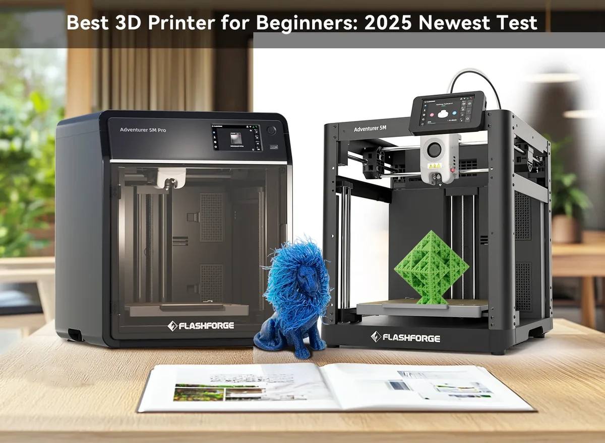

What is 3D Printing?
3D printing is a manufacturing process that creates physical objects from digital models. A 3D printer builds the object one layer at a time until the full model is complete.
One of the most common types of 3D printing is fused deposition modeling, or FDM. FDM printers heat plastic filament and deposit it onto a build plate in thin layers.
Basic Printing Process
- Create or download a 3D model.
- Open the model in slicing software.
- Choose print settings and generate the printer instructions.
- Load filament and prepare the printer.
- Start the print.
- Remove and finish the completed object.
3D Printing in Action
The video below shows an example of the 3D printing process in action. The printer builds the object layer by layer, demonstrating the precision and capabilities of modern 3D printing technology.